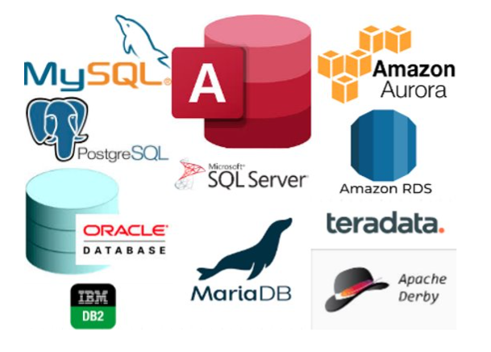

sql_101
Introdução ao SQL
O que é SQL?
SQL significa Structured Query Language.
O que é query?
É uma solicitação (consulta) feita ao banco de dados para recuperar, manipular ou inserir dados.
Voltando a pergunta inicial: O que é SQL?
É uma linguagem case-insensitive, i.e., ignora o fato das letras serem minúsculas ou maiúsculas no código.
E é utilizada para gerenciar dados em bancos de dados relacionais.
O que é banco de dados relacional?
É um tipo de banco de dados que armazena dados em tabelas organizadas em linhas e colunas.
O que é tabela?
Uma tabela contém um conjunto de colunas (campos), que representam os atributos dos dados, e cada linha representa um registro contendo os valores dos atributos para aquele registro.
O que é uma linha?
A linha representa um registro e dita a unidade daquela tabela, é MUITO importante entender o que a tabela representa no banco para entendermos os registros.
O que é uma coluna?
A coluna representa um atributo daquela tabela, normalmente representando uma característica do registro linha, as colunas podem ter alguns tipos, como: VARCHAR, INT, FLOAT.
Os tipos podem ter operações específicas que utilizamos, e.g., operadores matemáticos são, em geral, utilizados para campos numéricos.
E como as tabelas se relacionam?
Para as tabelas se relacionarem é necessários existem campos entre elas que permitam os vínculos, normalmente são utilizados dois tipos de campos, as chaves primárias e estrangeiras.
O que é chave primária?
Uma chave primária (primary key) é um campo ou conjunto de campos em uma tabela que identifica unicamente cada registro na tabela.
A chave primária é usada para garantir a integridade dos dados e para permitir a ligação ou relacionamento entre tabelas.
O que é chave estrangeira?
Uma chave estrangeira (foreign key) é um campo ou conjunto de campos em uma tabela que se relaciona com a chave primária de outra tabela.
A chave estrangeira é usada para estabelecer um relacionamento entre duas tabelas. Ela garante que os dados em uma tabela estejam vinculados aos dados em outra tabela.
SQL é único?
Sim e não, tanto o ISO quanto o ANSI estabelecem padrões para as linguagens SQL e os bancos de dados relacionais.
Logo, existem padrões universaisa serem seguidos, porém fora estas regras é possível criar diferentes flavors de SQL.

Alguns exemplos que temos em nossos sistemas:
TGC = Firebird
ECO (Web) = PostgreSQL
ECO (Coletor) = SQlite
Automação (Tablet) = SQLite
Todos são regidas pelos conceitos universais de SQL, porém terão funções específicas e algumas sintaxes diferentes. Além disto, alguns são tecnologias open-source (PostgreSQL), e outros são pagos (T-SQL).
O que existe além de tabelas em um banco?
Schemas
Um schema permite agrupar e organizar um conjunto de objetos de banco de dados relacionais, como tabelas, visões, procedimentos armazenados, funções e outros elementos.
Basicamente ele rege o que e como estarão as entidas e componentes dentro de um banco.
Views
É uma consulta salva que é armazenada no banco de dados como um objeto.
A view é definida como uma tabela virtual, que é uma tabela que não possui dados físicos armazenados nela, mas que pode ser acessada como uma tabela real através de comandos SQL.
Procedures
É uma rotina de código SQL armazenada no banco de dados como um objeto que permite executar tarefas complexas, encapsular a lógica de negócios, e reutilizar esta lógica.
Functions
É similar a procedure, porém tem como objetivo primário retornar um valor e ser diretamente utilizadas nas consultas.
E como acesso um banco de dados?
Existem ferramentas de gerenciamento de banco de dados, como:
DBeaver
MySQL Workbench
IBM Data Studio
Estas ferramentas são auxiliares, ou seja, não afetam em nada a escrita das consultas, o que muda?
Formas de visualização dos dados e afins
Formas de exportação
Conectores para diferentes bancos
Entre outras funções relativas ao uso geral do banco
Existem bancos não-relacionais?
Sim, também conhecidos como bancos de dados NoSQL (Not Only SQL).
Eles utilizam outros modelos de dados, distintos da relação entre tabelas, como: documentos, grafos, chave-valor, colunas amplas, entre outros.
Cada modelo tem suas próprias características e é otimizado para diferentes tipos de aplicação e necessidades de armazenamento e consulta de dados.